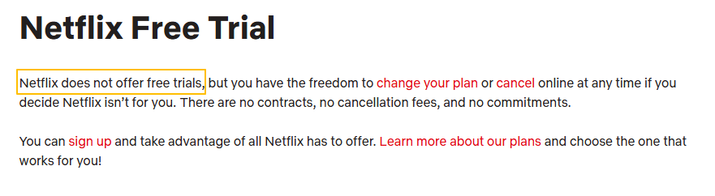
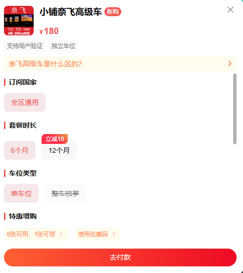
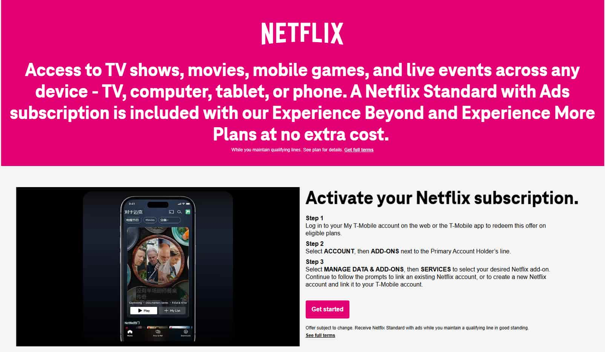
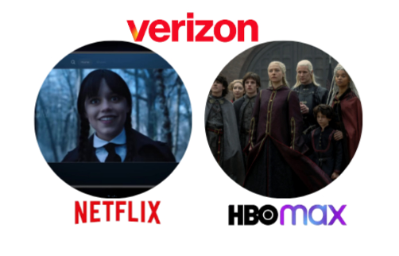
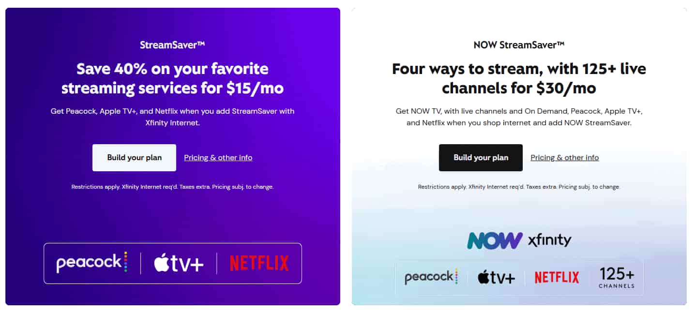

Netflix 有免費試用嗎？這裡有更便宜的替代方案 (2025)
2025年10月 ，Netflix在美國繼續掀起波瀾，推出了包括《外交官》和《鬼入侵》在內的多部優秀作品。與此同時，全球粉絲們正熱切期待著備受期待的 《怪奇物語》 第五季 ，該劇將於 11月 首播，必將引發新一輪的觀影狂潮。
與其他主流流媒體平台不同，Netflix 很少提供價格折扣或促銷活動，反而近年來多次上調價格。作為 Netflix 的長期訂閱用戶，我經常在省錢和繼續觀看自己喜歡的節目之間左右為難。
這就是為什麼這麼多用戶不斷詢問： "Netflix 還提供免費試用嗎？" 別擔心 - 本文將探討這個問題，並揭示 四種行之有效、經濟實惠的方式，讓你以更少的錢享受 Netflix Premium ，這樣你就可以省錢而又不錯過任何樂趣。
Netflix 有 30 天免費試用嗎？
早在 2022 年及之前，Netflix 就曾為新用戶提供 30 天的免費試用期。這是在決定訂閱之前探索該平台龐大內容庫的絕佳方式。
但到了2025年，情況發生了變化。Netflix的節目依然是一流的，但訂閱價格卻持續上漲，最新一次上漲發生在 2025年1月 。
而如今，Netflix 不再提供任何免費試用期 。
即使 Netflix 不再提供免費試用，也不意味著你必須支付全價。仍然有合法、安全的方式讓你以更低的價格享受 Netflix Premium。
免費觀看Netflix的綜合指南
訣竅如下：
- 帳戶共享： 與家人或朋友分攤費用，或使用 奈飛小鋪 等訂閱共享平台訪問 Netflix。
- 移動運營商計劃： T-Mobile、Verizon 和 Comcast 的一些計劃包含免費的 Netflix。
- YouTube： YouTube 上可以免費觀看有限數量的 Netflix 節目。
- 信用卡和銀行促銷： 某些信用卡和銀行提供流媒體優惠、補貼或折扣，可以幫助你減少 Netflix 賬單。
通過 奈飛小鋪 以更低價格獲得 Netflix Premium
目前，Netflix 有 3 個套餐：帶廣告的標準套餐、標準套餐和高級套餐：
| 計劃 | 每月價格 | 廣告 | 額外會員席位 | 視頻質量 |
|---|---|---|---|---|
| 標準版（含廣告） | 7.99 美元 | ✔️ | 0 | 全高清（1080p） |
| 標準 | 17.99 美元 | ❌ | 1 | 全高清（1080p） |
| 優質的 | 24.99美元 | ❌ | 3 | 4K + HDR |
| 奈飛小鋪 | 6.99 美元 | ❌ | 0 | 4K + HDR |
Netflix Premium 官方支持最多 四位用戶同時進行流媒體播放 ，這使其成為家庭或朋友共享的合法且經濟實惠的選擇。
然而，建立和管理自己的群組可能會很麻煩——這正是 奈飛小鋪 的 用武之地。作為一個值得信賴的帳戶共享 平台 ，奈飛小鋪 可讓你 安全輕鬆地 共享 Netflix Premium 帳戶，讓每個人都能以更低的成本享受相同的 4K HDR 無廣告體驗。
在 奈飛小鋪上，加入共享的Netflix Premium帳戶 每月 只需6.99美元，比官方價格 便宜60%以上。
如果你更願意擁有一個完整的帳戶，奈飛小鋪 還提供 每月 30 元（RMB） 的個人 Netflix 計劃，仍然低於官方的 24.99 美元。
使用移動套餐節省 Netflix 費用
一些互聯網服務提供商 (ISP) 現在將 Netflix 捆綁到他們的套餐中。如果你已經訂閱了 T-Mobile、Verizon 或 Comcast 的某些套餐，則可以免費使用 Netflix。
T-Mobile：套餐內免費提供 Netflix
到 2025 年，T-Mobile 將為符合條件的用戶提供免費的Netflix 標準（含廣告）套餐。以下是包含免費 Netflix 的 T-Mobile 套餐：
- 已激活兩條或兩條以上線路的 Go5G 或 Magenta 計劃
- 只需激活 Experience More、Experience Beyond、Go5G Next、Go5G Plus 或 Magenta MAX 計劃中的一項
要在 T-Mobile 上激活 Netflix，請登錄你的 "我的 T-Mobile" 帳戶，選擇 "管理附加組件" ，選擇 "管理數據和附加組件" ，然後在 "服務" 部分添加 Netflix。如果你是現有 Netflix 用戶，你的 Netflix 賬單可能需要一到兩個計費週期才能轉移到 T-Mobile。
Verizon：Netflix + Max 套餐
Verizon 為符合條件的用戶提供 每月 10 美元的 Netflix + Max（含廣告） 套餐。這相當於節省了一份訂閱費用。
要享受此優惠，你需要以下 Verizon 計劃之一：
- 移動套餐：無限終極版、無限升級版、無限歡迎版
- 家庭互聯網計劃：5G 家庭、LTE 家庭、精選 Fios 家庭互聯網計劃（不包括經典獨立計劃）
根據我們的測試，我們發現Netflix 和 HBO 都值得擁有。因此，如果你擁有 Verizon 家庭寬帶，只需每月在寬帶賬單上加 10 美元，即可同時使用 Netflix 和 HBO Max，節省 40%。
康卡斯特：StreamSaver Netflix 捆綁包
康卡斯特為其 Xfinity 寬帶服務 推出了名為 StreamSaver 的 特別訂閱套餐。訂閱 Xfinity 寬帶後，你只需每月 15 美元即可享受以下三種流媒體服務：
- Netflix 標準版（含廣告）：6.99 美元/月
- Apple TV+：每月 9.99 美元
- Peacock Premium（含廣告）：每月 5.99 美元
此套餐尤其適合現有的 Xfinity 寬帶客戶，因為價格比較顯示它幾乎就像免費獲得 Netflix 一樣。
對於想要以最低成本享受多個流媒體平台內容的用戶來說， StreamSaver 無疑是非常划算的選擇。
在 YouTube 上觀看免費 Netflix 劇集
StreamSaver 的激活流程非常簡單。購買後，你將收到一封包含激活鏈接的電子郵件。只需點擊鏈接，然後選擇"激活 Netflix"選項即可開始使用。
很多人沒有意識到，實際上有些 Netflix 節目可以在 YouTube 上免費觀看。Netflix 在其官方 YouTube 頻道上傳了約 47 部不同劇集的完整劇集。
為了方便起見，這裡有一個直接鏈接，你可以在 YouTube 上找到 Netflix 的所有免費完整劇集：Netflix 完整劇集。
信用卡和銀行提供的 Netflix 折扣
Netflix 經常與信用卡和銀行合作提供各種促銷優惠，幫助你節省訂閱費用。
例如美國銀行Altitude Go信用卡提供每年15美元的流媒體補貼，只要你每年連續11個月支付流媒體費用，就可以獲得這15美元的補貼。
此外，美國運通 Blue Cash Preferred 卡在 Netflix 等指定流媒體服務上提供6% 的現金返還。同時，支付 695 美元的年費，即可獲得美國運通白金卡，該卡提供每月 20 美元的數字娛樂訂閱服務。
該計劃非常適合那些喜歡使用信用卡的人，因為它可以讓你享受流媒體訂閱的折扣，同時享受信用卡的便利。
總的來說，無論是通過移動運營商計劃、奈飛小鋪，還是利用信用卡和銀行促銷，所有這些方式都可以幫助你節省訂閱費用。
Netflix 免費試用替代品
雖然 Netflix 不再提供免費試用，但還有許多其他高質量的流媒體服務提供。以下列出了一些受歡迎的替代方案，供你參考。
1. Hulu
Hulu 提供 30 天免費試用，主要面向美國市場。Hulu 適合喜歡關注最新美劇的人士。它提供各種熱門的美國綜藝節目，例如《週六夜現場》、《美國之聲》和《美國達人秀》。
2. 亞馬遜Prime視頻
Amazon Prime Video 提供 30 天免費試用。Amazon Prime Video 上的內容涵蓋好萊塢大片、經典電影以及一些原創劇集。Amazon Prime Video 還擁有許多原創劇集，例如《了不起的麥瑟爾夫人》和《洛奇》系列，均獲得了良好的口碑。
3. Apple TV+
Apple TV+ 提供 7 天免費試用，專注於原創內容，提供《早間新聞》、《變形金剛：野獸崛起》和《隔壁的縮小醫生》等優質劇集和電影。
4. 派拉蒙+
Paramount+ 主要關注 CBS、MTV、Nickelodeon 和 Paramount 等頻道的內容，面向美國觀眾。它提供 7 天免費試用。如果你想延長免費觀看時間，我們還測試並找到了一些免費觀看 Paramount+ 的有效方法。
5. Crunchyroll
如果你想深入了解日本動漫，Crunchyroll 的 7 天免費試用是最簡單的入門方式。盡情享受試用期吧！如果你決定在試用結束後繼續觀看，這份Crunchyroll 訂閱指南將帶你了解所有需要了解的信息。
結論
2025年，Netflix 將不再為新老用戶提供免費試用。不過，仍然有一些方法可以以折扣價使用 Netflix，例如在奈飛小鋪上購買共享帳戶或將其與其他服務捆綁銷售。
如果你正在尋找 Netflix 免費試用版或帶有免費試用版的替代流媒體選項，則有幾種選擇可供考慮，包括 Hulu、Amazon Prime Video、Apple TV+ 和 Paramount+。
如果你不確定在 Netflix 上首先要看什麼，請不要擔心 - 我們整理了Netflix 上最佳喜劇的指南以及8 部最佳經典節目的列表，可幫助你快速上手。
常問問題
1. 我可以與另一個家庭共享我的 Netflix 帳戶嗎？
是的，Netflix 官方的標準和高級套餐支持家庭內部共享帳戶。如果你想與不同家庭成員共享帳戶，Netflix 將要求你支付額外帳戶費用。
2. Netflix 還值得嗎？
Netflix 仍然是一個受歡迎的流媒體平台。如果你看重其內容庫的多樣性、原創性和速度，Netflix 是一個不錯的選擇。但是，如果你主要關心的是訂閱費用，那麼你可能需要探索訂閱共享或等待促銷活動。
3. Netflix 免費試用期結束了嗎？
Netflix 不再提供免費試用。該公司於 2020 年 10 月在美國停止了 30 天的免費試用。這意味著從 2025 年開始，Netflix 將不再為新訂閱用戶提供免費試用期。
相關文章：